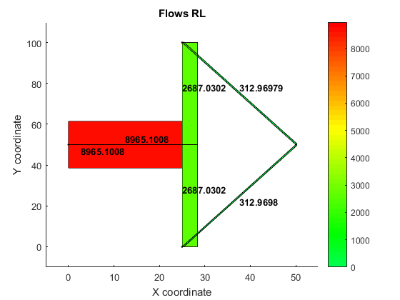

Contents
Clear and close everything
clear
clc
close all
First add the folders
Matlab directory is 'ThesisJeroen'
javaclasspath('/Main Library/Static Assignment');
addpath(genpath(pwd))
Initializing
%Initialize parameters travelcost
mu=1;
alpha = 0.15;
beta = 4;
All routes
While Dial's route set depends on the topologic order (and thus on the costs), the RL's route set is always complete
% On a simple netwerk, this can be visualised. % Consider the next network: load network1.mat plotNetwork(nodes,links,true,[]);

With only a demand from node 1 to node 2 If we now solve it by Dial, we see a realtive smooth convergence
flowsD = MSA_STOCH_D(odmatrix,nodes,links,mu,true); % With a higher demand, the topologic order changes sometimes % (A 'o' indicates only 1 route has been found in the current situation, % while a '.' indicates multiple routes.) % Here the convergence is not smooth anymore odmatrix(4)=10000; MSA_STOCH_D(odmatrix,nodes,links,mu,true); % After 100 iterations, the minimum gap has not been reached
Elapsed time is 5.841465 seconds. Converged in iteration 87 Elapsed time is 5.988472 seconds. Maximum Iteration limit reached: 100
While RL always consider the 2 possible routes (there are no loops possible in this network) Restore original demand
odmatrix(4)=3000;
flows1rl = rlEq(odmatrix,links,mu,alpha,beta,[],[],[-1.5,0,0],true);
% Where Dial has not converged with a higher demand, RL does:
odmatrix(4)=10000;
rlEq(odmatrix,links,mu,alpha,beta,[],[],[-1.5,0,0],true);
Elapsed time is 2.058756 seconds. it: 23 gap (veh/h): 0.00084854 max update flow (veh/h): 0.00058197 relative gap: 2.8285e-07 Converged in iteration 23 Elapsed time is 1.636413 seconds. it: 25 gap (veh/h): 0.00067869 max update flow (veh/h): 0.0005134 relative gap: 6.7869e-08 Converged in iteration 25
Visualize the difference in link flows (from original demand)
flowsVerschil = sum(flows1rl,2)-sum(flowsD,2); plotLoadedLinks(nodes,links,sum(flows1rl,2),true,[],[],[],'Flows RL'); plotLoadedLinks(nodes,links,sum(flowsD,2),true,[],[],[],'Flows Dial'); plotLoadedLinksDifference(nodes,links,flowsVerschil,true,[],3/max(flowsVerschil),[],'Flows RL-Dial');
Now that every route (even with loops) is conciderd, extra penalties need to be taken. If we adjust the network a little bit as follows:
load network2.mat plotNetwork(nodes,links,true,[]); % Notice that loops are possible now!
If we than calculate the flows with Recursive Logit we get:
flowsrl = rlEq(odmatrix,links,mu,alpha,beta,[],[],[-1.5,0,0],true); plotLoadedLinks(nodes,links,sum(flowsrl,2),true,[],[],[],'Flows RL'); % Witch seems to be very strange. We see that route with Uturns is used, and % even routes with loops in it! % In some ocasion, uturns and loops may be realistic (like parking search % behaviour), but not in this numbers. Therefor we add a penalty for making % Uturns. If we take the beta now equal to -100, we get: flows2rl = rlEq(odmatrix,links,mu,alpha,beta,[],[],[-1.5,-100,0],true); plotLoadedLinks(nodes,links,sum(flows2rl,2),true,[],[],[],'Flows RL');
Elapsed time is 2.547147 seconds. it: 27 gap (veh/h): 0.00072683 max update flow (veh/h): 0.00031871 relative gap: 2.4228e-07 Converged in iteration 27 Elapsed time is 2.507333 seconds. it: 24 gap (veh/h): 0.00071526 max update flow (veh/h): 0.0002928 relative gap: 2.3842e-07 Converged in iteration 24
If we plot the difference with the penalty of uturns against the network with the prevouisly network we get:
flowsVerschil = sum(flows2rl,2)-[sum(flows1rl,2);flows1rl(4);zeros(2,1)]; plotLoadedLinksDifference(nodes,links,flowsVerschil,true,[],3/max(flowsVerschil),[],'Flows RL with uturn penalty-without'); % Witch results in the same flows.
An other penalty that can take place, is a penalty of going donw in the hierarchy of the links. This is for advoiding traffic going on a lower level link to slighty have a shorter route Consider the following network (where there are no loops!):
load network3.mat plotNetwork(nodes,links,true,[]); % The straight line is a highway, with the precense of two off and off % ramps % With the same demand (now going from node 1 to node 5) we get: flowsrl = rlEq(odmatrix,links,mu,alpha,beta,[],[],[-1.5,0,0],true); plotLoadedLinks(nodes,links,sum(flowsrl,2),true,[],[],[],'Flows RL'); % Let say the route over the lower level of links is not realistic, we can % now give a penalty to 'going down in the hierachy'. flowsrl = rlEq(odmatrix,links,mu,alpha,beta,[],[],[-1.5,0,-5],true); plotLoadedLinks(nodes,links,sum(flowsrl,2),true,[],[],[],'Flows RL'); % We see that only a few take the alternative route. This can be adjusted % by 'selecting' (calibrating) the right value for the beta for this % penalty
Elapsed time is 2.636897 seconds. it: 25 gap (veh/h): 0.00077192 max update flow (veh/h): 0.00017881 relative gap: 2.5731e-07 Converged in iteration 25 Elapsed time is 2.285119 seconds. it: 25 gap (veh/h): 0.00071924 max update flow (veh/h): 0.00017881 relative gap: 2.3975e-07 Converged in iteration 25